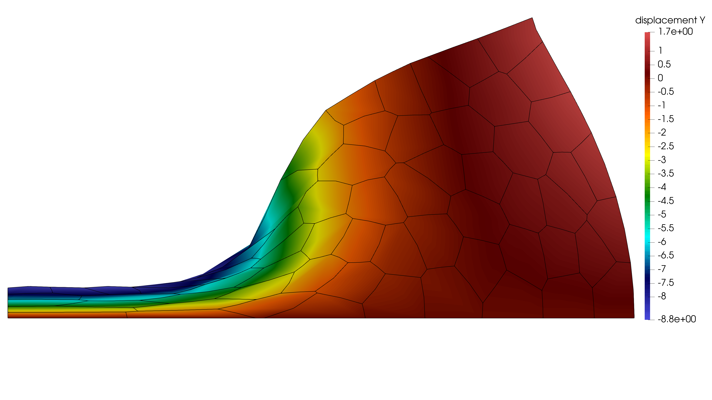

\[-\operatorname{Div}\mathbf P(\mathbf F)=\mathbf 0\quad\text{in }\Omega_0,
\qquad \mathbf F=\mathbf I+\nabla_0\mathbf u.\]
VEM / Quadratic VEM
Quadratic polygonal VEM example
A runnable 2D displacement example using quadratic projection, internal quadrature, and DOFI stabilization.

Quadratic polygonal VEM
Second-order VEM (VEM_ORDER 2). LEFT u_x = 0, BOTTOM u_y = 0, TOP u_x = 0; vertical traction −800t on LINE[(0,10),(10,10)]. E = 240.5, nu = 0.3; stabilization parameter = 1.
Strong form
Finite-strain equilibrium on a polygonal domain.
\[\mathbf u=\bar{\mathbf u}\text{ on }\Gamma_D,
\qquad \mathbf P\mathbf N=\bar{\mathbf t}\text{ on }\Gamma_N.\]
The polygon boundary groups and actual prescribed values are listed in input/BC.txt.
\[G_E=
\int_E \mathbf P(\mathbf F(\Pi^\nabla\mathbf u)): \nabla_0(\Pi^\nabla\delta\mathbf u)\,dV
+S_E((I-\Pi)\mathbf u,(I-\Pi)\delta\mathbf u).\]
The consistency term is integrated at the cached internal quadrature points. The DOFI term controls the projection-null component.
Equation-to-code mapping
The implementation follows the projected weak form directly.
| Mathematical quantity | Meaning | Code identifier | Source function |
|---|---|---|---|
| \(\Pi^\nabla\mathbf u\) | Quadratic projection | u_pi | weak_scalar_vem |
| \(\Pi^\nabla\delta\mathbf u\) | Projected test field | du_pi | weak_scalar_vem |
| \(\nabla\Pi\mathbf u\) | Projected gradient | grad_u | weak_scalar_vem |
| \(S_E\) | DOFI stabilization | dofi_stabilization | dofi_stabilization |
| \(G_E\) | Element weak form | G | weak_scalar_vem |
Input conditions
BC.txt
DIRICHLET displacement LEFT x 0.0
DIRICHLET displacement BOTTOM y 0.0
DIRICHLET displacement TOP x 0.0
NEUMANN displacement LINE[(0,10),(10,10)] uy -800.0*tMaterial.txt
youngs_modulus 240.5
poisson_ratio 0.3
stabilization_parameter 1.0DOFS_info.txt
field_key displacement
domain Solid
VEM_ORDER 2Solver.txt
solver_backend umfpack
dt 0.25
total_time 1.0
adaptive_dt on1. active_constitutive_field_names
std::vector<std::string> active_constitutive_field_names(const FieldMesh& mesh) {
(void)mesh;
return {"displacement"};
}2. dofi_stabilization
static Scalar dofi_stabilization(
const vem::QuadraticElementCache& cache,
const std::vector<Scalar>& x_elem,
const std::vector<Scalar>& test_elem,
const vem::Coeff6x2T<Scalar>& u_pi,
const vem::Coeff6x2T<Scalar>& du_pi,
const ProblemParameters& params
) {
const auto& U = cache.layout.field("displacement");
const auto grad_center = vem::quadratic_projection_gradient(u_pi, {{0.0,0.0}});
const Scalar Gamma = dofi_gamma_from_neo_hookean_c_tangent(grad_center, params);
Scalar S(0.0);
for (int s = 0; s < cache.geom.n_slots; ++s) {
const auto up = vem::quadratic_projection_value_basis(u_pi, cache.slot_basis[s]);
const auto dup = vem::quadratic_projection_value_basis(du_pi, cache.slot_basis[s]);
Scalar dot(0.0);
for (int c = 0; c < 2; ++c) {
const Scalar delta_u = x_elem[hpx::local_dof(U, s, c)] - up[c];
const Scalar delta_du = test_elem[hpx::local_dof(U, s, c)] - dup[c];
dot += delta_u * delta_du;
}
S += Scalar(0.5) * Gamma * dot;
}
return S;
}3. weak_scalar_vem
static Scalar weak_scalar_vem(
const FieldMesh& mesh,
int elem_id,
const std::vector<Scalar>& x_elem,
const std::vector<Scalar>& test_elem,
const ProblemParameters& params,
const ElementState& state
) {
(void)state;
const int q_order = std::max(3, params.solver.gauss_order);
const vem::QuadraticElementCache& cache = vem::get_cached_quadratic_element(mesh, elem_id, q_order);
if (mesh.dim != 2 || cache.layout.dim != 2) {
throw std::runtime_error("Quadratic VEM currently supports 2D displacement VEM only.");
}
if (static_cast<int>(x_elem.size()) != cache.layout.n_local()) {
throw std::runtime_error("Bad current element vector size in quadratic VEM.");
}
if (test_elem.size() != x_elem.size()) {
throw std::runtime_error("Bad test element vector size in quadratic VEM.");
}
const auto u_pi = vem::quadratic_projection_coefficients(cache, x_elem);
const auto du_pi = vem::quadratic_projection_coefficients(cache, test_elem);
Scalar G(0.0);
for (const auto& qp : cache.internal_qps) {
const auto grad_u = vem::quadratic_projection_gradient_basis(u_pi, qp.grad_basis);
const auto grad_du = vem::quadratic_projection_gradient_basis(du_pi, qp.grad_basis);
G += Scalar(qp.dV) * neo_hookean_plane_strain_density(grad_u, grad_du, params);
}
G += dofi_stabilization(cache, x_elem, test_elem, u_pi, du_pi, params);
return G;
}4. compute_constitutive_element_system
ElementSystem compute_constitutive_element_system(
const FieldMesh& mesh,
int elem_id,
const Vector& x_elem,
const ProblemParameters& params,
const ElementState& state
) {
return hpx::scalar_weak_form_element_system(
// return hpx::scalar_weak_form_element_system_dfad(
x_elem,
[&](const auto& x_ad, const auto& test_ad) {
return weak_scalar_vem(mesh, elem_id, x_ad, test_ad, params, state);
}
);
}Build and run
Build the supplied model and run its input files directly.
make -C FEM MODEL_SRC=../Web/examples/vem-quadratic/weak_form_vem_quadratic.cpp USE_VEM=1
cd FEM
OMP_NUM_THREADS=2 ./bin/fem ../Web/examples/vem-quadratic/input/ProblemMesh.txt ../Web/examples/vem-quadratic/input/Material.txt ../Web/examples/vem-quadratic/input/BC.txt ../Web/examples/vem-quadratic/input/Solver.txt ../Web/examples/vem-quadratic/input/Postprocessing.txt ../Web/examples/vem-quadratic/input/DOFS_info.txtDownload input files